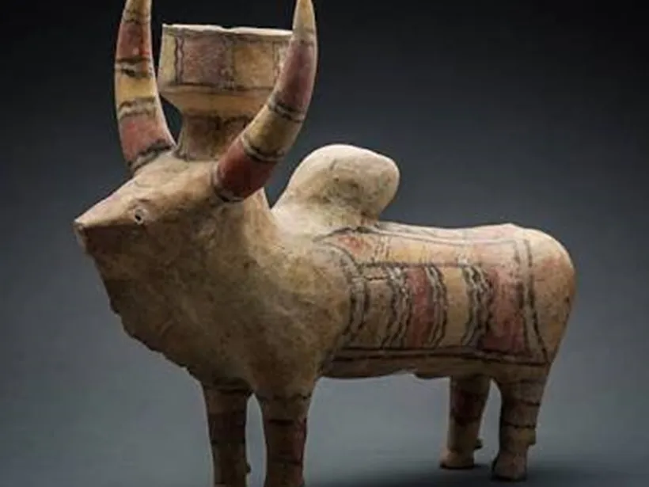
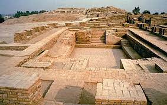
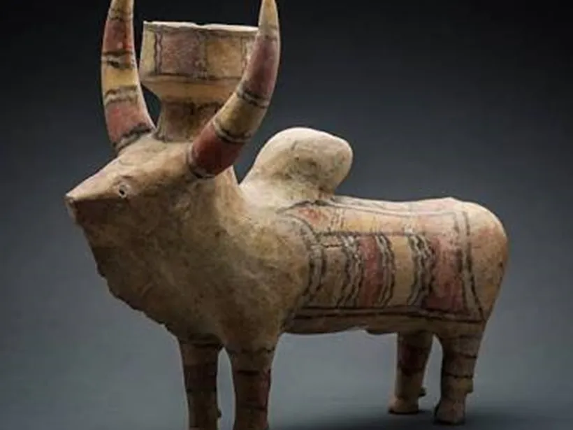
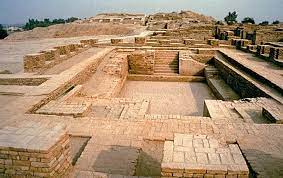

INDUS VALLEY CIVILIZATION ART
The Indus Valley Civilization (IVC), one of the world's earliest urban cultures, was known for its advanced architecture, urban planning, and a rich tradition of art and craftsmanship. The art of the IVC is characterized by its precision, attention to detail, and use of various materials, including stone, terracotta, bronze, and seals.
1. Seals
Material
: Steatite (a soft stone), terracotta, and occasionally copper.
Description
: The seals are small, square or rectangular in shape, often featuring intricate carvings of animals, humans, and mythological creatures, along with inscriptions in the undeciphered Indus script. The most common motifs include the humped bull (zebu), elephants, rhinoceroses, and unicorn-like figures. These seals were likely used for trade, administration, and possibly religious or ceremonial purposes.
Iconic Example
: The Pashupati seal, depicting a figure seated in a yogic posture, surrounded by animals, is one of the most famous artifacts from the Indus Valley, suggesting an early form of Shiva worship.
2. Sculptures
Materials
: Terracotta, bronze, stone, and faience (a glazed ceramic).
Description
: Indus Valley sculptures include figurines, statues, and busts.
Terracotta Figurines
: Small, often depicting women with elaborate hairstyles and ornaments, possibly representing fertility goddesses.
Bronze Statues
: The most famous is the "Dancing Girl" from Mohenjo-Daro, a bronze figurine of a young woman with an expressive pose, showcasing advanced metalworking skills.
3. Pottery
Materials
: Baked clay and terracotta.
Description
: The pottery of the Indus Valley is notable for its fine craftsmanship, uniformity, and a variety of shapes and sizes. It was often decorated with geometric patterns, floral motifs, and scenes of animals or human activities. Black-on-red ware was a popular style, with designs painted in black on the red clay base. Pottery was used for daily purposes, storage, and ritualistic activities.
4. Jewelry
Materials
: Gold, silver, copper, semi-precious stones (like carnelian, lapis lazuli, and agate), and shells.
Description
: Jewelry was an essential part of the Indus Valley culture, worn by both men and women. The designs were sophisticated, with beads, necklaces, bangles, earrings, and amulets being common. The beadwork was particularly advanced, with artisans using drilling techniques to create detailed designs
5. Beadwork
Materials
: Semi-precious stones, terracotta, and shell.
Description
: Bead-making was a highly developed craft in the Indus Valley. Beads were often made from carnelian and were polished and drilled with precision. They were used in necklaces, bracelets, and other forms of jewelry, often found in burial sites, indicating their importance in both life and death.
 


